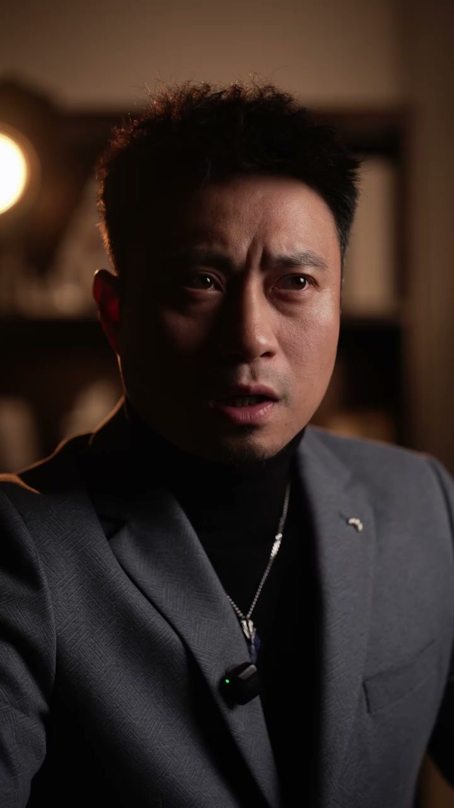
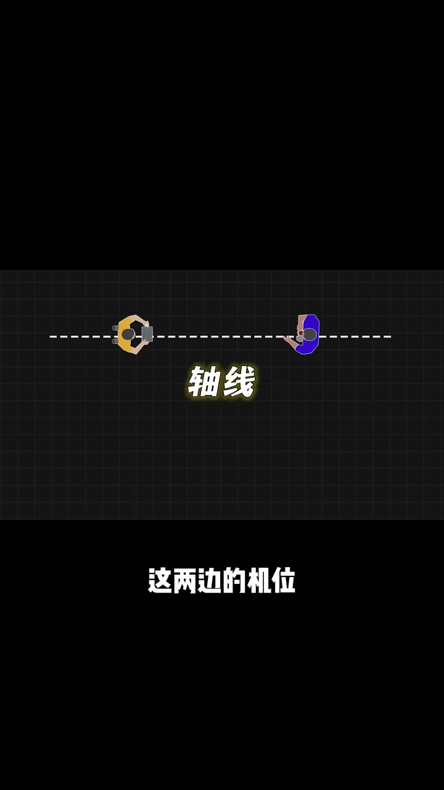
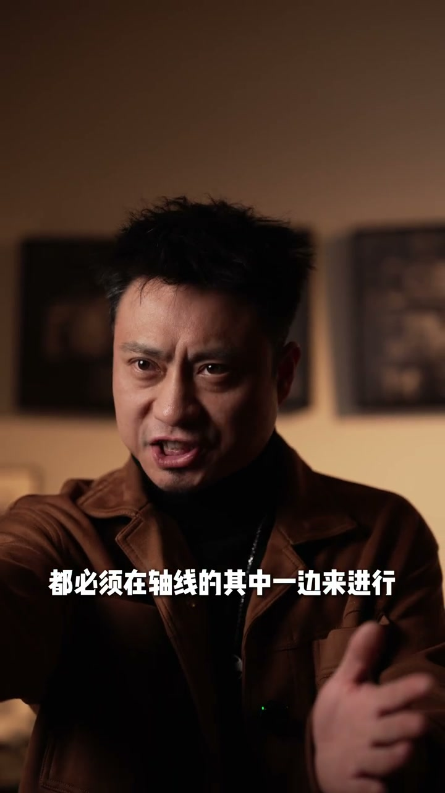
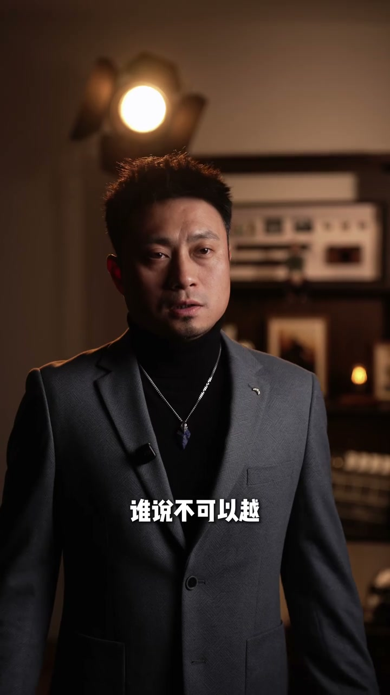
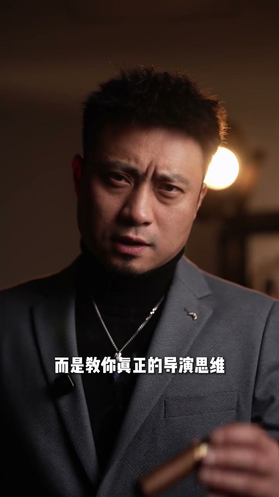

01
中文
对话戏这么拍没感觉。
EN
Filming dialogue like this feels flat.
表达提示flat（没感觉）
Scene English · 摄影 · 正反打
The Universal Way to Film Dialogue
🎧 语音讲解
Lower the Camera to Eye Level
情境对话戏拍得没感觉，先降低机位和演员平视，并带着人物关系去拍，立马有戏。
对话戏这么拍没感觉。
Filming dialogue like this feels flat.
表达提示flat（没感觉）
把机位降下来，和演员平视。
Lower the camera to the actor's eye level.
表达提示eye level（平视）
并带着关系去拍，立马有戏了。
Shoot with relationship in mind—and it comes alive.
表达提示comes alive（有戏）
flat（没感觉
eye level（平视

Outside Reverse: Carry the Relationship
情境外反打是正反打中常见的一种：镜头越过一方肩膀拍另一方，画面带着人物关系、更有层次。
这不就是我们常说的正反打吗。
Isn't this the classic shot-reverse-shot?
表达提示shot-reverse-shot（正反打）
这是正反打中的外反打。
This one is the outside reverse.
表达提示outside reverse（外反打）
外反打带着人物关系，画面更有层次。
It carries the relationship and adds depth.
表达提示adds depth（更有层次）
shot-reverse-shot（正反打
outside reverse（外反打

Inside Reverse: Show the Inner World
情境内反打不拍对方，只拍单人，用于表达人物内心活动。
有外反打，那还有内反打啰。
If there's an outside reverse, there's an inside reverse too.
表达提示inside reverse（内反打）
内反打则是表达人物内心。
The inside reverse expresses a character's inner world.
表达提示inner world（内心）
inside reverse（内反打
inner world（内心

The Axis and the Center Position
情境二人对话时中间有一条轴线，两边的机位是外反打和内反打，还有一个机位在中间可以拍双人。
二人对话时，中间有一条轴线。
Two people in dialogue share an axis between them.
表达提示axis（轴线）
这两边的机位，就是外反打和内反打。
The two side positions are outside and inside reverses.
表达提示side positions（两侧机位）
还有一个机位在中间，可以拍二人同框。
A center position captures both people.
表达提示center position（中间机位）
这个机位好有仪式感，再推紧一些还能制造戏剧效果。
This position feels ceremonial; push in for drama.
表达提示ceremonial（仪式感）
axis（轴线
side positions（两侧机位

Ride the Axis: Break the Fourth Wall
情境骑轴拍就是机位在二人中间，类似打破第四堵墙，还有主观视角效果，能把观众带入角色。
咱还可以骑轴拍。
You can also ride the axis.
表达提示ride the axis（骑轴）
骑轴其实就是机位在二人中间。
Riding the axis puts the camera between them.
表达提示between them（二人中间）
类似打破第四堵墙，有主观视角效果。
It breaks the fourth wall with a POV feel.
表达提示fourth wall（第四堵墙）
能将观众带入角色，产生代入感。
It drops viewers into the character's shoes.
表达提示into the shoes（代入）
ride the axis（骑轴
between them（二人中间

Crossing the Axis: Follow the Story
情境很多教程说不能越轴，其实要看情节：为了表达需要，可以故意越轴甚至跳切。
还有很多人讲，再怎么样咱都不能越轴。
Many say you must never cross the axis.
表达提示cross the axis（越轴）
谁说不可以越，要根据情节来。
Who says not? It depends on the story.
表达提示depends on the story（看情节）
我还运镜着越，再给你来个跳切呢。
I can cross while moving, then cut.
表达提示jump cut（跳切）
不要为了眼前一点蝇头小利，而放弃了长远规划。
Don't trade long-term planning for short-term gain.
表达提示long-term planning（长远规划）
cross the axis（越轴
depends on the story（看情节
说降低机位
说外反打
说内反打
说轴线机位
说骑轴
说越轴
机位平视加关系。
内外反打别混用。
越轴要看情节。
中间机位有仪式感。
跳切要刻意。